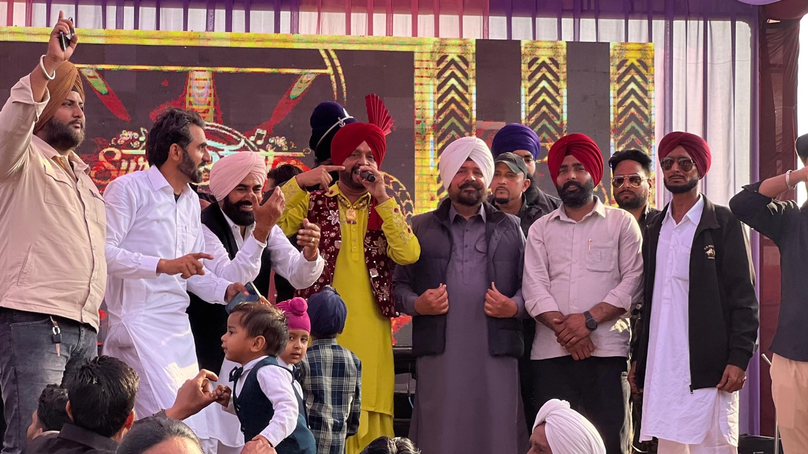

Discover the rich heritage, vibrant culture, and promising future of Khem Karan constituency.
Khem Karan is a significant town in the Tarn Taran district, located in the strategic border region near the India-Pakistan border. The constituency spans both urban and rural areas, encompassing farming communities, religious institutions, and diverse populations.
Defined by its brave spirit and deep cultural roots, Vidhan Sabha Halka KhemKaran is a region of resilience and pride.

The defining features of Halka KhemKaran
Predominantly Sikh population with strong religious traditions. Gurdwaras serve as spiritual and community centers.
A significant farmer community forms the economic backbone. Wheat, rice, and other crops sustain livelihoods.
Located near the India-Pakistan border, influencing economic opportunities and the region's resilient spirit.
A balanced constituency with both urban settlements and rural villages, each with distinct needs.
Rich traditional practices alongside modern governance. Festivals and gatherings are integral.
Strong inter-community relationships supporting families through celebrations, challenges, and everyday life.
Key areas of focus for the growth and welfare of Khem Karan
Building roads, utilities, and public facilities to connect communities and enhance quality of life.
Supporting schools and institutions to provide quality education and pathways for youth.
Addressing farmer concerns, promoting modern practices, and ensuring fair market access.
Improving healthcare access, welfare schemes, and family support programs.
Supporting Gurdwara development, maintenance, and preservation of spiritual heritage.
Strengthening support systems, grievance redressal, and social welfare outreach.